ADVERTORIAL
Optometrist: 7 Reasons Why I Recommend These German-Engineered “Smart Zoom” Glasses to All My Patients
102.5k
As an optometrist, I’m often asked why reading glasses haven't evolved in 30 years.
According to the Centers for Disease Control (CDC), age-related vision decline (presbyopia) affects 128 million Americans over 40. That’s nearly 1 in 3 adults.
Yet the industry still forces them to choose between cheap drugstore junk or overpriced custom optics.
Most people end up cycling through cheap pairs every few months — spending $60-$120 yearly on glasses that never quite do their job right. The constant on-off routine. The eye strain. The squinting when you look up from your book.
Real progressive lenses solve this. But at $600+, they're simply out of reach for most people - especially retirees on fixed incomes.
That's exactly why these German-engineered readers are spreading across America faster than any vision product I've seen in my 19 years of practice.
They're called Human Frame MD OmniView , and I've recommended them to over 200 patients in the last six months.
The feedback has been so overwhelmingly positive that I'm now recommending them before custom progressives for 90% of presbyopia cases.
Here are the top 7 reasons why I now recommend these to nearly every patient over 40 who walks through my door.
Reason #1: True Progressive Lenses (Not Fake "Readers")
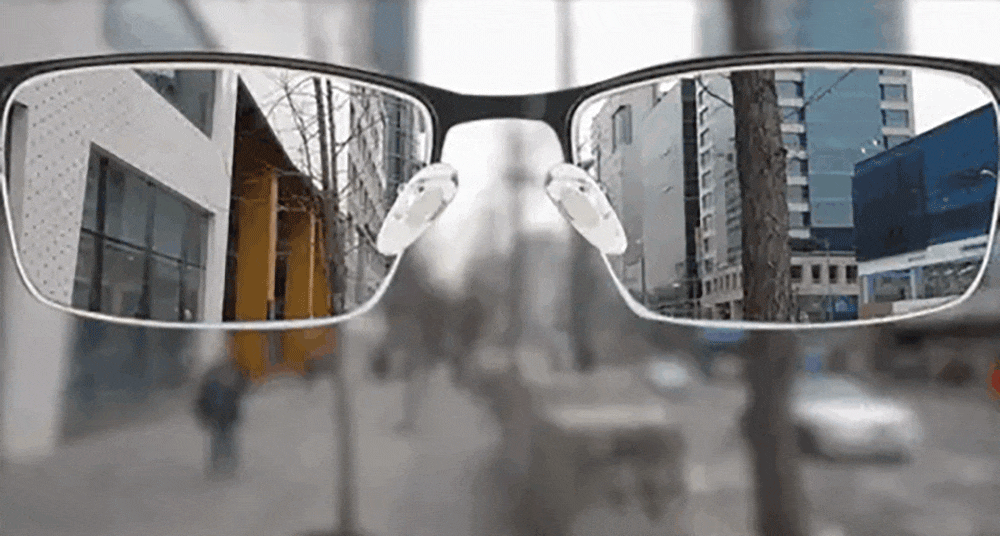
The problem with most reading glasses is that they’re single-vision magnifiers.
You look down to read - great. You look up at anything else - total blur.
This forces your eyes into an unnatural pattern. You're constantly taking them on and off.
As a results, your eye muscles get lazy. And you become dependent on them faster than necessary.
Human Frame MD uses actual progressive lens technology (“smart zoom”)
The same seamless, multi-focal design I typically prescribe for $400-$600.
These intelligent zoom glasses transition between focal points.
It gives you a wider field of view, making your vision more expansive.
You can wear them and smoothly move your gaze from top to bottom, effortlessly seeing things at different distances.
That way you're not forcing unnatural accommodation patterns. And you can wear them all day without the on-off cycle that accelerates presbyopia dependency.
Reason #2: Blue Light Filtering for Digital Eye Strain
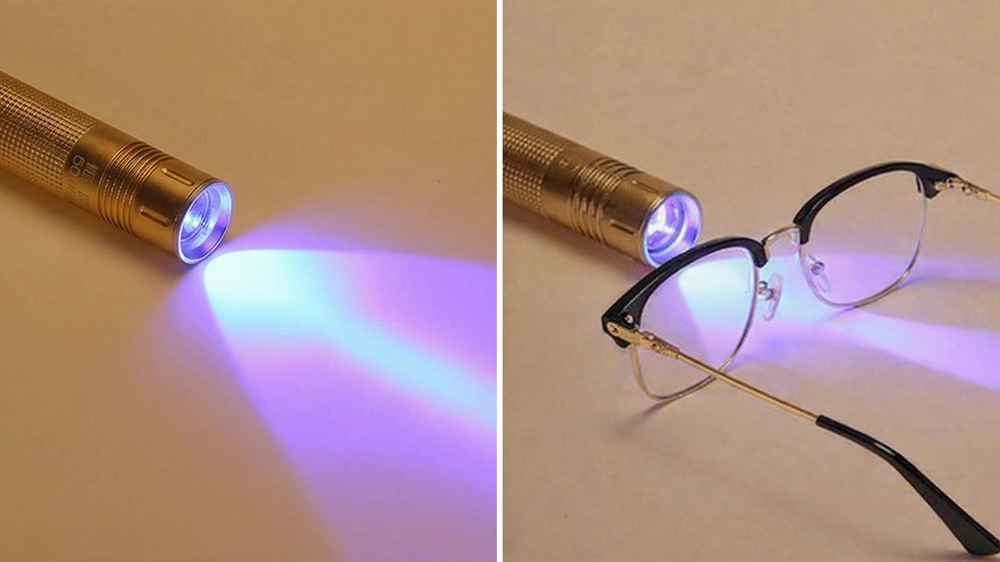
73% of my older patients now use tablets, computers, or e-readers daily.
And 73% of them complain about digital eye strain.
That's not a coincidence.
Blue light from LED screens penetrates deeper into the retina than other wavelengths.
It disrupts your circadian rhythm, causes oxidative stress in retinal cells, and triggers eye fatigue faster than any other light source.
I used to prescribe separate "computer glasses" for this. Not anymore.
Human Frame MD filters 100% of harmful blue light. The coating is permanent - fused into the lens during manufacturing.
My patients report dramatically reduced eye fatigue, fewer headaches, and better sleep quality (blue light exposure before bed destroys melatonin production).
One pair handles books AND screens. That's a legitimate clinical advantage.
Reason #3: UV Protection
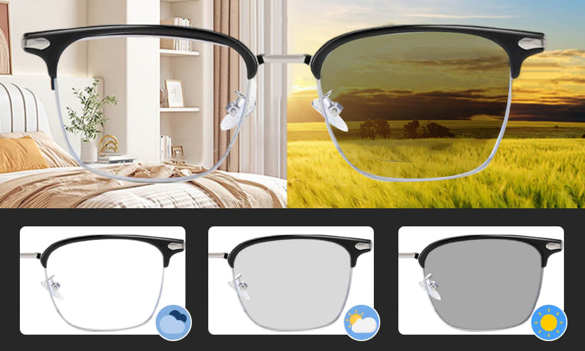
Most people think UV protection is just for sunglasses.
Wrong.
Cumulative UV exposure - even indoors from windows and artificial lighting - contributes to cataract formation, macular degeneration, and accelerated aging of the lens.
I see the long-term damage in my exam room every single day.
Human Frame MD has medical-grade UV blocking embedded in the lens material.
Not a surface coating that wears off. Actual filtration at the molecular level.
99.8% UVA and UVB protection. That's the same standard I look for in prescription lenses.
This isn't just about comfort today. It's about protecting your vision for the next 20-30 years.
Reason #4: Photochromic Technology (No More Switching to Sunglasses)
I can't tell you how many patients lose or break glasses because they're juggling multiple pairs.
Reading glasses indoors. Prescription sunglasses for outdoors. Computer glasses for screens.
It's expensive, inconvenient, and honestly unnecessary with modern lens technology.
Human Frame MD lenses are photochromic. That means they automatically darken in UV light and clear up indoors.
The transition happens in 8-12 seconds (faster than most prescription photochromic lenses I've tested).
You can read on your porch in bright sunlight without squinting. Walk back inside and the lenses clear immediately. No switching. No fumbling in your bag.
For patients with active lifestyles, this is transformative.
Reason #5: They're Light Enough to Wear All Day
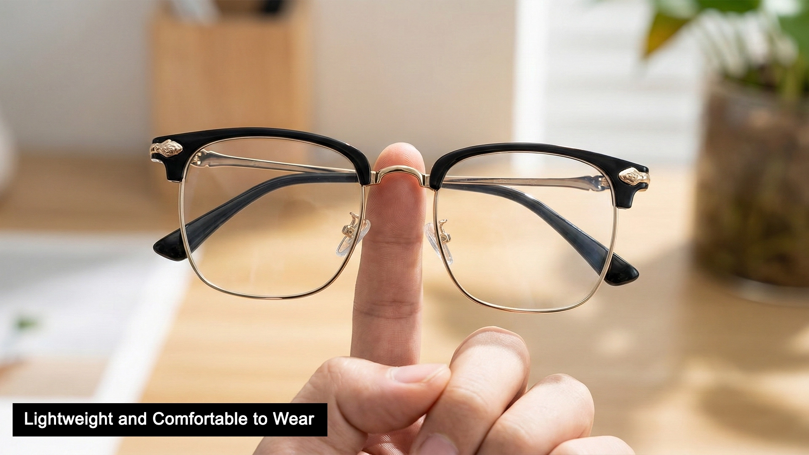
Here's a problem nobody talks about: heavy glasses cause tension headaches.
When you've got 30+ grams sitting on your nose bridge for hours, you're compressing nerves and restricting blood flow.
That pressure creates referred pain, such as headaches, neck tension, and even jaw discomfort.
Most of my patients complain about this. They blame their eyes. But it's actually the glasses.
Human Frame MD weighs 17 grams. That's a 40-50% weight reduction compared to standard frames.
The difference is immediate. Patients tell me they forget they're wearing them.
The frames use aerospace polymer. Flexible, durable, and so light that there's minimal pressure on your nasal bridge even after 8-10 hours of wear.
Reason #6: Durability That Justifies the Investment
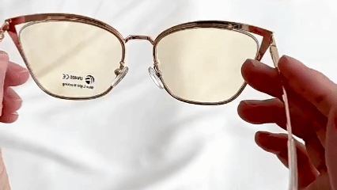
The average patient replaces drugstore readers every 2-3 months.
Not because their prescription changed. Because the glasses broke, scratched, or fell apart.
Human Frame MD frames are built with memory polymer technology .
That means they flex up to 30 degrees without breaking. The hinges are reinforced. The screws are embedded, not surface-mounted. Plus, the lenses have scratch-resistant coating.
I've had patients wear them for six months with zero degradation in optical clarity.
One patient sat on hers. Another dropped his and stepped on them. Both pairs survived without damage.
When you factor in replacement costs, these are actually cheaper than drugstore readers over a 6-month period.
Reason #7: The Price Point Makes Premium Vision Accessible For Anyone

Here's the uncomfortable truth about optometry: premium progressive lenses are priced out of reach for most retirees.
Custom progressives at my office start at $425. With frames and coatings, you're looking at $600-$850.
Insurance covers a fraction. Most patients can't justify that expense - especially if they need multiple pairs for backup.
So they settle for cheap single-vision readers. And their vision quality suffers.
Human Frame MD offers 90-95% of the clinical benefit at $79.98 (currently on sale for $39.99).
That's accessible. That's realistic for people on fixed incomes.
I'd rather see my patients in quality German-engineered progressives they can actually afford than struggling with $12 drugstore magnifiers.
Bonus Reasons Why I Love It (And Recommend Them To My Patients)
✅Precise Magnification: Offers magnification from +1.00 to +4.00 to meet everyday vision needs.
✅Lightweight and Flexible Frame: Contours to your face without putting pressure on the nose.
✅High-Quality Hinge: Durable construction minimizes the risk of breakage.
✅Ultra-Thin HD Resin Lenses: Lightweight and ideal for individuals with presbyopia.
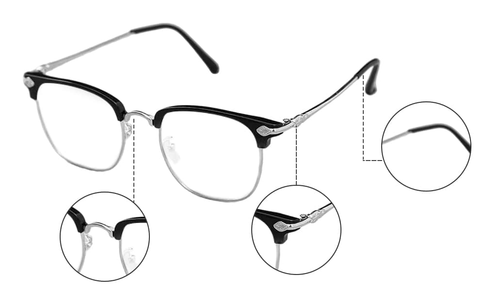
✅Durable Memory Frame: Resistant to breaking and slipping, ensuring comfort.
✅Comfortable Silicone Nose Pads: Provide a secure, non-slip fit for added comfort.
✅Embedded Screws: Ensures components remain securely in place.
✅Wear-Resistant and Shockproof Design: Enhances durability for long-term use.
✅Scratch-Resistant Structure: Maintains clarity and appearance over time.
✅Water and Oil Resistant: Offers extra protection against everyday elements.
✅Eye Protection in Varying Lighting Conditions: Shields your eyes in different environments.
✅Versatile for Various Occasions: Suitable for everyday wear in multiple settings.
People Are Raving About It:
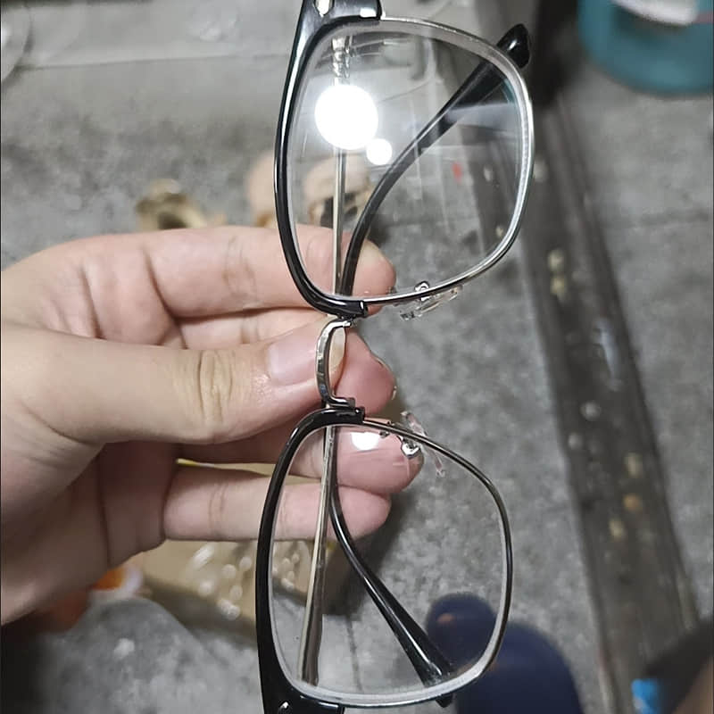
"Astonishingly good glasses for the price. I can work with it
on a PC and use the lower reading part to read even small
fonts without changing glasses. That was a problem with simple
reading glasses. The frame fits me without any
post-processing, is also quite sturdy and looks good."
- Joseph P.
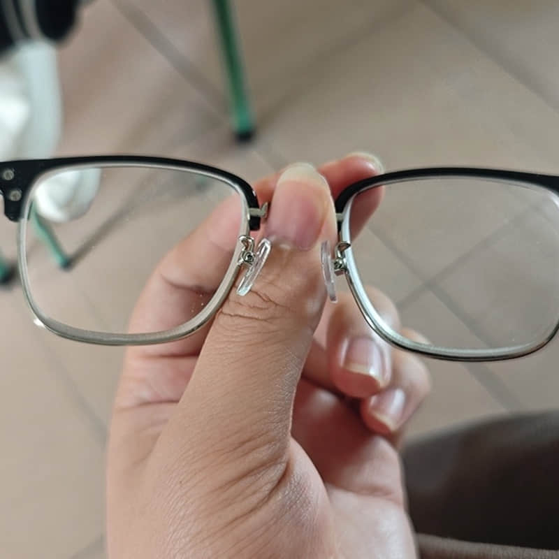
"I'm very skeptical at first, but these glasses are absolutely
great. I never thought I could do everything I love without
switching pairs. Whether I'm reading, working on my computer,
or just enjoying the view, they make everything crystal
clear!"
- Sarah W.
Are They Really Worth It? Here’s My Professional Recommendation
If you’re over 40 and beginning to notice the effects of presbyopia, difficulty reading up close, frequent eye strain, or constantly switching glasses…
I recommend trying these before committing to $600+ custom progressive lenses .
For the majority of patients with straightforward age‑related vision changes, Human Frame MD OmniView provide a level of clarity and comfort that closely matches prescription progressives …
Without the weight, distortion, or high cost that often comes with them.
I’ve now recommended these to over 200 patients in my practice, and the response has been incredible – especially among those who were hesitant to invest in custom lenses or had poor experiences with cheap readers.
While I still prescribe custom progressives for complex cases, this is the first solution I suggest for those looking for a practical, comfortable upgrade to standard reading glasses.
Exclusive Offer for Readers of This Article (Today Only)
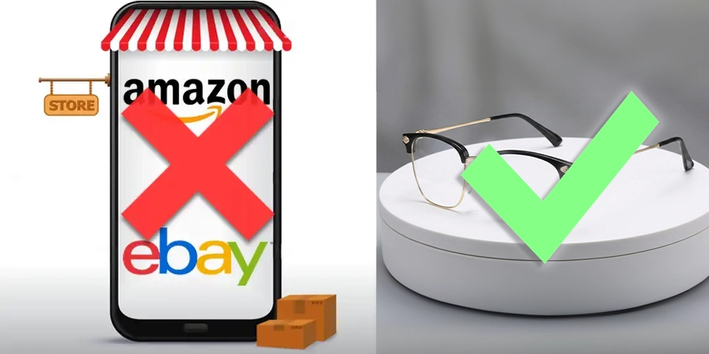
If you’ve read this far, it’s safe to say you’re not just casually reading this article.
You’re someone who takes your vision seriously.
You’ve likely dealt with the same issues I hear about every day — eye strain, squinting, fatigue, and the frustration of juggling cheap reading glasses that don't perform.
That’s exactly why Human Frame MD has created a special limited-time offer, exclusively for readers of this article.
You see, with the help of a small group of eye care professionals — myself included — they’re doing everything they can to help educate the public on better vision options …
And help as many Americans as possible bypass the overpriced “optical tax” and finally experience premium vision at a price they can actually afford.
That’s why, right now, for a limited time, you can get the OmniView for 50% off — just $39.99.
This is such an amazing deal for a life-changing product like this that you’ll use EVERY DAY.
But unfortunately, it’s also temporary and only available through this article.
You won’t find this price in stores, and it’s not available on Amazon.
So without further ado, click the big green button below and take the first step towards crystal-clear vision and ending the cycle of eye strain for good."
The "Zero-Risk" 30-Day Vision Challenge
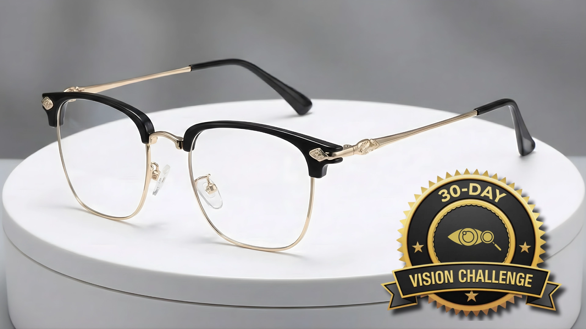
Human Frame MD knows that after years of being let down by cheap pharmacy readers and overcharged by boutique offices, you might be skeptical. That’s why they are removing the final barrier.
They aren't just giving you a warranty; they’re giving you a 30-Day Vision Challenge . Because they know how superior their product truly is.
When your Human Frame MD OptiReader Pros arrive, put them to the ultimate test.
Wear them during a 10-hour workday. Use them to read the fine print on a pill bottle, then look up to watch TV. Experience the total absence of "Neural Strain" and headaches.
If they don’t outperform your $600 prescription progressives – or if you don’t agree they are the most comfortable glasses you’ve ever owned – simply send them back within 30 days.
They will issue a full, "no-questions-asked" refund immediately.
They’re taking 100% of the risk because they know that once you see the world through a "Fluid-Focal" lens, you’ll never want to go back.
Don't spend another day squinting at your world or nursing a vision-induced headache.
Click the button below to claim your discount and experience the high-definition clarity you deserve.
Human Frame MD OmniView
Get 50% OFF Now
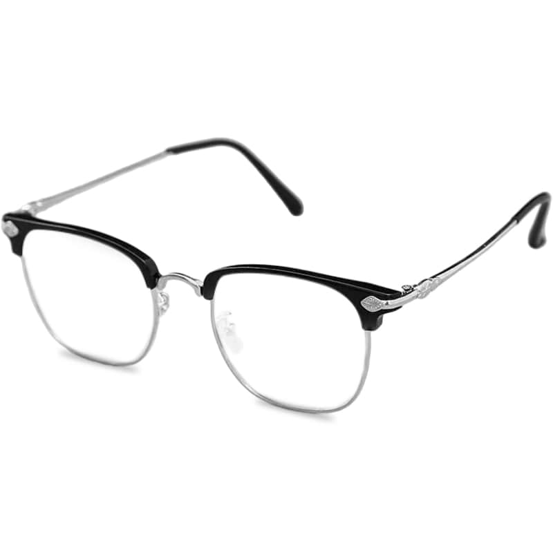
Discover clearer vision without the prescription price
CHECK AVAILABILITY →
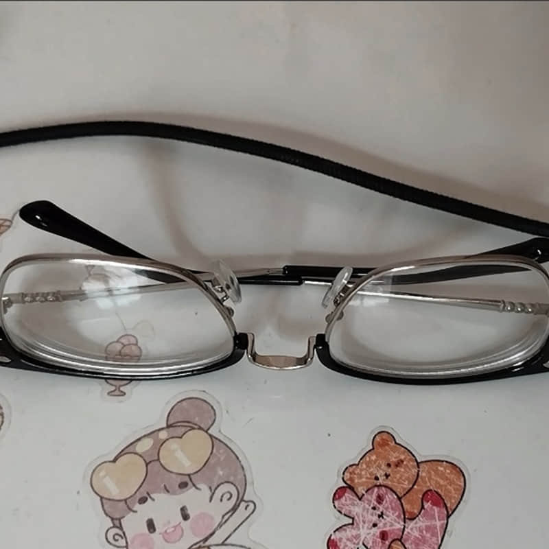
"I have had horrible vision, and after trying countless pairs, I finally found Human Frame MD. These glasses came on time and were well packaged. They are very sturdy and a really nice style. They are very comfortable and I would recommend them to anyone."
- Olivia T.